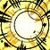

平衡德 PvP 判断训练器
这版本唯一要记住的一句
你有全场唯一能把人「移出这场战斗」的技能。
平衡德的活不是打伤害，是决定这一波谁参与不了。
平衡德的活不是打伤害，是决定这一波谁参与不了。

所以它最大的用途不是控输出，是把对面治疗从关键那几秒里摘出去，或者把一个正在被队友集火的目标保护起来（对，它也能反过来用）。加上
该不该开？勾一下就知道
勾掉几条，就有多少胜算。
开场决策器
现在的局面满足哪几条？
三个时钟
平衡德的节奏挂在这三个数字上。
施放
星能是你的输出燃料。Nature's Balance 让你脱战时星能平衡到 50 而不是清零——这意味着开局你就有资源可用。
这四个加起来，你对局面的干预能力是全场顶级的——但它们大多要读条或有距离要求，被贴脸时全都用不出来。
爆发时钟 · 超凡之盟 同时维持两种日蚀▸
天体交汇，同时维持两种日蚀并提供急速——两种伤害类型的加成一起吃。
它是纯输出冷却，所以要开在能安心站着输出的时候：对面控制交完、或者你的队友已经把压力接过去了。
本版定盘（top50 三对三实测）
英雄天赋：丛林守护者 Keeper of the Grove49/50 走这条，另一条只有 1 人▸
丛林守护者（Keeper of the Grove）49/50，艾露恩之眷（Elune's Chosen）1 人。这不是推荐，是唯一解。
这条线围绕
Moonkin Aura（46/50）——
Owlkin Adept（43/50）缩短
注意前三个都在强化同一件事：让你的控制更好用。这说明 top50 对这个专精定位的共识——控场优先于伤害。